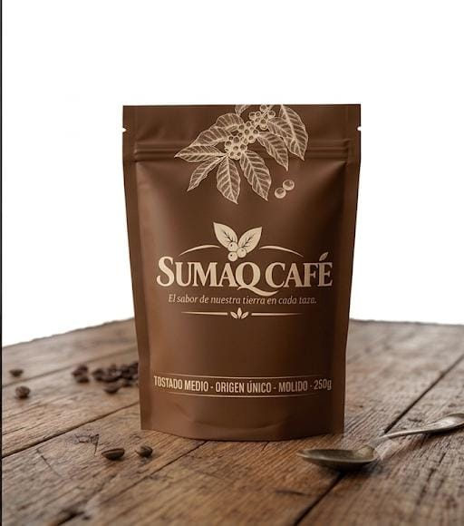

Café en grano para llevar
Bolsas de 250 gramos, molidas o en grano entero según el método que uses en casa. Todas incluyen la ficha de origen del lote.

Mezcla especial · Valle Sagrado
Grano entero, cosechado entre 1,700 y 1,900 msnm. Notas a panela y frutos secos, cuerpo medio y acidez suave. Ideal para prensa francesa o para quienes recién empiezan con café de especialidad.
S/ 32.00

Tostado medio · Origen único, Vraem
Molido para espresso, con cuerpo denso y dulzor a chocolate oscuro. Viene de un solo lote de la familia Quispe, cosechado a 1,500 msnm en la última campaña.
S/ 34.00